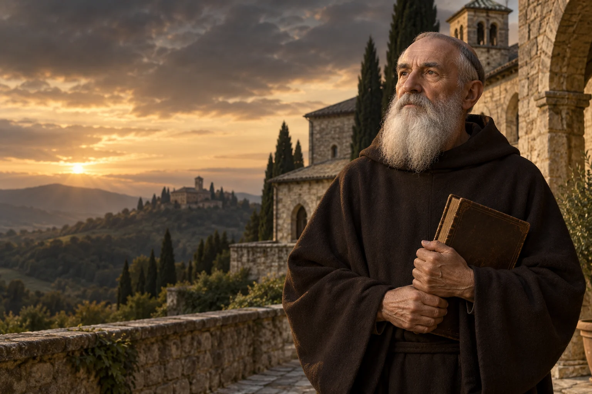

Rytm dnia
Zarezerwuj w planie dnia czas na pracę, odpoczynek i chwilę wyciszenia.

ok. 480–ok. 547
Obchód liturgiczny: 11 lipca
Mnich i autor reguły życia zakonnego, patron Europy.
Benedykt z Nursji jest związany z początkami zachodniego życia monastycznego i regułą, która do dziś kształtuje wspólnoty benedyktyńskie.
Poznaj historię jego życia →Dobry rytm życia może łączyć modlitwę, pracę, odpoczynek i troskę o innych.
Refleksja redakcji W Modlitwie.Pochodzi z okolic Nursji.
Według tradycji opuszcza studia i miasto.
Prowadzi życie pustelnicze i gromadzi uczniów.
Z jego działalnością wiąże się klasztor na Monte Cassino.
Tradycyjna przybliżona data śmierci.
Paweł VI ogłasza go patronem Europy.
 Współczesne wyobrażenie artystyczne.
Współczesne wyobrażenie artystyczne.Około 3 min czytania · 5 rozdziałów
Benedykt urodził się około 480 roku w okolicach Nursji w Italii. Najważniejszy dawny opis jego życia znajduje się w Dialogach Grzegorza Wielkiego, napisanych po śmierci mnicha. Jest to tekst hagiograficzny, a nie współczesna kronika. Dlatego szczegóły biografii i daty trzeba przyjmować z ostrożnością, rozróżniając świadectwo tradycji od tego, co można ustalić historycznie.
Późne źródło opowiada o Benedykcie w sposób właściwy żywotom świętych, nadając zdarzeniom znaczenie duchowe. Historyk nie musi traktować każdego szczegółu jako równoważnego zapisowi z epoki. Niepewność nie odbiera znaczenia zachowanej tradycji.
Według Grzegorza Benedykt przybył do Rzymu na naukę, lecz porzucił studia i opuścił miasto. Związał się najpierw z życiem religijnym poza Rzymem, a następnie przebywał jako pustelnik w okolicy Subiaco. Późniejsza tradycja łączy ten czas z grotą zwaną Sacro Speco. Opowieść przedstawia samotność jako okres modlitwy, prób i dojrzewania.
Odległość od miasta i nauki nie jest w tej opowieści prostą pochwałą ucieczki od ludzi. Okres samotności poprzedza późniejszą odpowiedzialność za innych. Taką kolejność przedstawia tradycja przekazana przez Grzegorza Wielkiego.
Z czasem Benedykt zaczął skupiać wokół siebie uczniów i tworzyć wspólnoty. Tradycja wiąże kolejny etap jego życia z Monte Cassino, gdzie powstał klasztor o trwałym znaczeniu. Benedykt nie zostawił nam szczegółowej autobiografii. Jego postać poznajemy przez późniejszą opowieść oraz przede wszystkim przez przypisywaną mu regułę życia monastycznego.
Monte Cassino stało się jednym z ważnych miejsc pamięci benedyktyńskiej. Jego dalsza historia trwała długo po śmierci założyciela i obejmowała okresy zniszczeń oraz odbudowy. Dzieje jednego klasztoru nie wyczerpują jednak bogactwa całej rodziny benedyktyńskiej.
Reguła św. Benedykta porządkuje modlitwę wspólną, lekturę i pracę. Zwraca uwagę na odpowiedzialność opata, relacje między braćmi oraz przyjmowanie gości i troskę o słabszych. Nie jest receptą na życie bez trudności, lecz wskazówką dla konkretnej wspólnoty. Jej trwałość pokazuje, że duchowość można odnajdywać w stałym rytmie obowiązków i uważności na drugiego człowieka.
Reguła zwraca uwagę na miarę i dostosowanie wspólnego życia do możliwości osób. W jej perspektywie obowiązki nie są przeszkodą dla modlitwy, a wspólnota potrzebuje zarówno porządku, jak i cierpliwości wobec ludzkich ograniczeń.
Tradycyjnie śmierć Benedykta umieszcza się około połowy VI wieku; dokładna data pozostaje niepewna. Jego reguła była przyjmowana przez wspólnoty w różnych częściach Europy. Mnisi benedyktyńscy przekazywali ją w zmieniających się warunkach i kulturach. W 1964 roku Paweł VI ogłosił Benedykta patronem Europy, wskazując znaczenie jego duchowego i wspólnotowego dziedzictwa.
Benedyktyńskie dziedzictwo obejmuje wiele autonomicznych wspólnot, których dzieje różnią się zależnie od miejsca. Ogłoszenie patronem Europy przypomina o długim wpływie tej tradycji na modlitwę, edukację i kulturę kontynentu.
Przedstawienie życia oparte na Dialogach nie pozwala ustalić z jednakową pewnością wszystkich dat. Dlatego wydarzenia w osi czasu opisano szeroko, jako etapy tradycji. Reguła pozostaje osobnym, ważnym świadectwem myślenia o odpowiedzialności we wspólnocie. Jej czytanie wymaga uwzględnienia realiów monastycznych późnej starożytności.
Zarezerwuj w planie dnia czas na pracę, odpoczynek i chwilę wyciszenia.

Przyjmij dziś czyjąś obecność z uwagą, odkładając na moment inne zajęcia.

Sprawdź, czy w Twojej wspólnocie ktoś potrzebuje bardziej dostępnego sposobu uczestnictwa.
Ojcze nasz, któryś jest w niebie, święć się imię Twoje; przyjdź królestwo Twoje; bądź wola Twoja jako w niebie, tak i na ziemi. Chleba naszego powszedniego daj nam dzisiaj; i odpuść nam nasze winy, jako i my odpuszczamy naszym winowajcom; i nie wódź nas na pokuszenie, ale nas zbaw ode złego. Amen.
Tradycyjny tekst modlitwy; utrwalony polski wariant.Ojcze nasz →